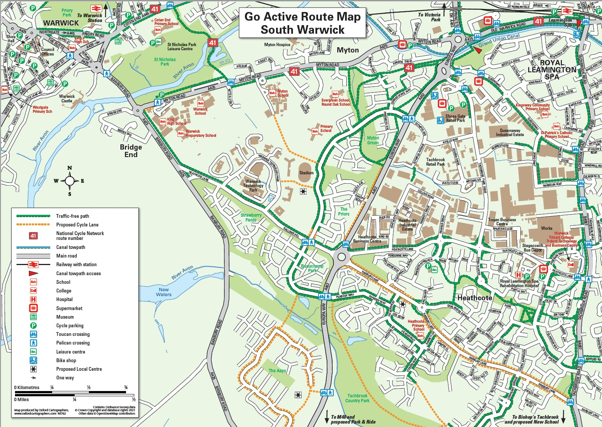

Improve Our Towns
We know that clean air is a key improvement that people want. As a result, local government, businesses and private households in the town are all doing things around you to help promote a better, cleaner environment.
The first objective in the ‘Transport’ section of the Royal Leamington Spa Neighbourhood Development Plan is ‘To reduce vehicle traffic emissions, improve air quality and increase access to and use of sustainable transport modes across Royal Leamington Spa’.
Below are some examples of organisations doing their bit for Clean Air in Warwickshire:
Clean Air Warwickshire
Clean Air for Leamington Spa is actively working to achieve our vision of a town where air quality is excellent, people are prioritised over vehicles, there is a high degree of active travel and people actively support clean air. Some highlights include:
- Anti-Idling
- Clean Air Warwickshire Website
- Social Media Presence
- Raising Clean Air Concerns with Local Government
- Combining Clean Air for Leamington Spa with Clean Air Warwick and incorporating clean air stakeholders across the county.
- Liaison with Cycleways
- Go Active Route Map for South Warwick
We have been working with WCC transport planners, trying to understand current measures intended to improve air quality and encourage planning decisions that prioritise sustainable modes of transport rather than motor vehicles. A Clean Air Zone is being explored, as are 20mph limits in town, and a comprehensive cycle network. As well as infrastructure changes, we want to see the behavioural changes, like ride-share to work and walk to school schemes that will decrease traffic flow and improve air quality. Our Air Quality Summit last October chaired by our MP Matt Western captured public attention and generated a lot of enthusiasm.
Leamington Spa Town Council
Leamington Spa Town Council was established in 2002 to provide direct representation for the people of Leamington Spa, more information can be found on the Leamington Spa Town Council site.
Working within their remit, some of the ways in which the town council actively supports Clean Air include:
- Prioritising Cycling in the Neighbourhood Plan
Cycleways
The Royal Leamington Spa Neighbourhood Development Plan 2019-2029 states that during extensive consultation ‘The number one priority …was the need to improve the network and facilities available to support the increased use of bicycles’ (5.4.7).
Cycleways is a local organisation, aiming to promote cycling in Warwick District.
Some of cycleways key activities include:
- Social Media and Web Presence
- Raising Cycling Related Concerns with Local Government
- Provide Consultation for the Local Transport Plan
- Promoting the Warwick District Visionary Cycle Network
Warwick District Council
Warwick District Council is the Lower Tier Local Authority for Leamington Spa. The Warwick District Council pages explain their role and their responsibilities.
Within their remit, Warwick District Council are actively supporting clean air in Leamington and other parts of the district. Below are just a few examples:
Warwickshire County Council
Warwickshire County Council is the Upper Tier Local Authority for Leamington Spa. The Warwickshire County Council pages explain their role and their responsibilities.
Warwickshire County Council are actively supporting clean air in Leamington and other parts of the county.
Central Government
The Government has published Decarbonising transport: a better, greener Britain
The Letter from Lord Bethell to Dr Jenny Harries, UKHSA chief executive relates to the establishment of the Health Security Agency and the new testing lab in Leamington. Perhaps the most interesting section to us is in Annex A – section 2, 8th bullet point.
- Contributing to the cross-government Clean Air Strategy by leading a national programme of work to:
- develop and share the evidence base on air quality impacts on health
- improve how information on the health impacts of air pollution are communicated
- encourage and support behaviour change at every level
The Department of Transport previously published ‘Decarbonising Transport: setting the challenge’ (March 2020) in which the Secretary of State for Transport Grant Shapps emphasised the need for modal shifts away from the private car and towards active transport and better public transport systems.
From the heart of government to the streets of Leamington everyone has the same objectives. Our work now is to be part of the process that makes a Clean Air Town a reality in Royal Leamington Spa.
It is great to see that so much is being done for us, but What Can We Do as Individuals?